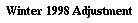
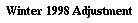

![[The Zine]](../../Common/DPbutton.gif) 

So now, without futher ado...
This article is not a set of rules (which you can find here), but tries to explain the basic mechanics and tactics of Exchange in a simpler manner than the rules, which should be skimmed first. Many of the basic goals and considerations of playing are covered, so that beginning players may avoid common pitfalls.
In Exchange Diplomacy each player is an investor. They are trying to win the game by getting the largest stake in the winning power or coalition of powers in the Payola game which is going on. Most directly, this might mean immediately buying lots of stock in one power, then trying get that power to win the game, but this is not the only possible route to victory. Indeed it is possible someone else may invest in another country initially, and get enough in dividends and profits from selling off that stock that they can then buy more stock than you in your initial company.
Investors start with money which can be used to influence the course of the game. This can be through direct manipulation of events on the board, or through investment of the money in stocks of the companies, which are the traditional powers of Payola countries.
The leader of each country for each year of the games is chosen by the stockholders of the country. This leader will not necessarily be the player with the largest stake in the company, but if someone managed to get the majority of the stock they can determine the outcome of the election.
It is important to note that in Exchange, every player has an identical start position. Rather than focusing on the strengths and weaknesses of your assigned major power, as in other variants, you create your own power block. This means paying careful attention to parameters of the game you are in; a change in the available starting cash for example may mean the difference between a single country starting the first year, and every nation on the board starting up ready to do battle.
Money can be made from investments in stock in one of two ways:
Another way to get money is to convince other players to transfer it to you. Corporations can't transfer money though; they are exploited in different ways.
Remember, money is useless at the end of the game, but until then it's a big help.
Some basic vocabulary:
The biggest decision early on is whether or not to start one or more companies, how much you are willing to pay for the privilege of doing so, and what the company worth will then be. On the plus side, the person making the startup gains the ability to decide how much the company is worth, chooses how the income is distributed among the company's home supply centers, and immediately gets 1/5 the stock without having to fight for it in the IOP phase.
On the down side, if the player cannot float the company or convince others to invest enough that it does float, then they have a lot of money tied up that is not doing them any good. It is possible for a company to never start, if the Payola game ends in a solo victory for some other company, though a draw requires all companies to be floated.
The next choice is which countries to buy stock in. Some of the reasons to buy a minor stake in a country besides direct profit are:
And of course, the two primary reasons for buying stock:
Reasons to avoid a stock like the plague:
Once you know what you want to buy, and how much of it you want, and how much money to hold in reserve, you construct your list of what to buy. There are some tactics involved- you need to list any countries with few stocks and many people buying at the start of your list, or by the time you get around to trying to buy some, it won't be there. You also can use a spending cap to maintain your reserve, and then include more stock in the list than you actually want to buy, which basically says "If you can't get the ones I really want, these later ones are better than nothing."
Here is an example of IOP phase processing:
The phase we now enter is the one where the unowned shares are available
for purchase. What I need from each player is a list of which shares they
need to purchase in priority order. Remember if you want more than one
share of a given company you list it multiple times.
Here is the promised example.
Pretend only England and Austria opened, each with 10 1AgP shares available,
and three players were in the game with the following buy-lists followed by
the players' chosen spending cap:
EAEEEAEAEAEEA : 8 AgP
AAAAAAAAAAEE : 10AgP
AAEAEAEAEAE : 10AgP
The lists would process as described in the rules. Assume they are
processed in the order given. The first list buys an E, the 2nd and 3rd buy
A. Now we have
AEEEAEAEAEEA : 7 AgP
AAAAAAAAAEE : 9AgP
AEAEAEAEAE : 9AgP
Now all get A. Then E, A, and E. Then E, A, A. Then E, A, E.
AEAEAEEA : 3 AgP Owns 4 E, 1 A
AAAAAEE : 5AgP, Owns 5 A
EAEAEAE : 5AgP Owns 3 A, 2 E
Now, there is only 1 A left, but two people want it. So the first
person gets the A, then the second goes through the list until getting
to an available stock (an E). The third gets an E.
EAEAEEA : 2 AgP Owns 4 E, 2 A
E : 4AgP, Owns 5 A, 1 E
AEAEAE : 4AgP Owns 3 A, 3 E
Final round, the last two Es are purchased, for a final status of
Owns 5E, 2A
Owns 5A, 2E
Owns 3A, 3E
Noone reached their spending cap, so it did not affect things.
After the IOP round, you will discover what countries actually floated, which ones are close and will probably float soon, and which ones are not even close. This may lead to a major rethinking of strategy, and will immediately affect the perceived value of your stock. Hopefully you have avoided tying up too much of your resources in nations that will never start, but that's only the first step concern. The people who started countries will now make some important decisions.
The people who started the floated countries now decide how to distribute its initial value among its starting SCs. This value is 1/5 the total value of all the stock, assuming it to be worth the IOP cost/share. So a country with 20 shares that sold for 50 each would have 1000/5=200 to distribute amount its starting SCs. This is an important decision, since it determines whether defensively the country will have one or two centers it is particularly important to support, or whether it has avoided putting all its eggs in one basket, but is hurt equally by any loss. You can't make any SC worth more than twice any other, so the distribution is limited in how extreme it can be.
Now the investors in each country find out who all the other investors are, and how much money is in the company treasury (and by extension the amount of the startup bid). They DON'T know how much stock each of the other investors has, so while each stockholder's influence on the coming election is rarely equal, it may be difficult to decide where the real strength lies.
The next phase is elections though, so if you want to run for office you need to get support somehow. Common approaches include a message to all shareholders outlining policy, and approaching shareholders individually or in groups based on what you know about their investments elsewhere.
Of course, you may not wish to run. In that case, you need to keep in mind that what is best for a candidate may not be what is best for you. As a shareholder, unless you have the plurality of the shares, you DON'T want the company to win the Diplomacy game. Whoever has the plurality does. If the company gets strong enough, you want to make sure the person in the president's chair isn't someone who thinks they have a plurality.
One of the biggest issues to be decided is monetary policy- will the corporation issue dividends. As a stockholder, you want dividends unless you think not issuing them will hurt your stock value more than the value of the dividend, or you have objectives to achieve on the board that are worth the loss of income, and you are confident the company will spend the extra money toward them.
You also need to consider the skill of the president at playing Diplomacy, especially if battle is soon. This goes both ways, since if you want to hurt the company you want a weak president:). If you are the swing vote, you can force a company to alternate presidents with much different military policies and cripple its ability to achieve much of anything. If the game isn't gunboat, and you are a highly ranked diplomacy player, you may be able to convince the stockholders to make you president to protect their investment on the board; then again, it just might scare them:).
After this, the new president decides whether to issue dividends, and if so how much. Most often, it will only be 1AgP/share, but more is possible. You can tell a lot about a president's true aims by whether they issue dividends. They also build at this time.
The rest of the game year is a lot like a normal Payola game fought between the companies. Mechanically, that is. From a strategy point of view, the goals may be different, and there are some interesting tactical tricks, like putting enemy units on top of SCs of countries that are about to start up to destroy them. And there may be players running more than one company. And Presidents may choose to use corporate treasuries under their control to help other countries they have an interest in.
Stockholders need not do anything during this period, but they can use their money to offer bribes to units just like the companies. They can also try to influence what the president does with his moves based on their vote in the next election.
Besides the linear game year, there is ongoing trading on the open market. The mechanics are simple- you just offer the share for sale at any price you choose, and buying it is first-come first-served. You're wise to ask around a little before offering a share to see what others are willing to pay for it, so that you get as much as you can for it, rather than selling it at a bargain. The only real penalty for offering a share is that it becomes public knowledge that you owned the share.
The large amount of secret information in the game is very important to a proper understanding of the strategies available. While you can be sure you'll win if you have the majority of a country and guide it to a solo, you can rarely be sure that you have the strongest portfolio when playing for a draw, especially a large one. You therefore need to always be on the lookout for information about what the other players are up to, and ways to strengthen and protect your hold within your chosen country.
There are several articles on playing Payola Diplomacy, and some game histories which it may be valuable to study. These can be found in past issues of The Diplomatic Pouch and at Payola Central.
You can find a complete set of the Exchange rules here.

|
Bruce Duewer (beduewer@eos.ncsu.edu) |
If you wish to e-mail feedback on this article to the author, and clicking on the mail address above does not work for you, feel free to use the "Dear DP..." mail interface.